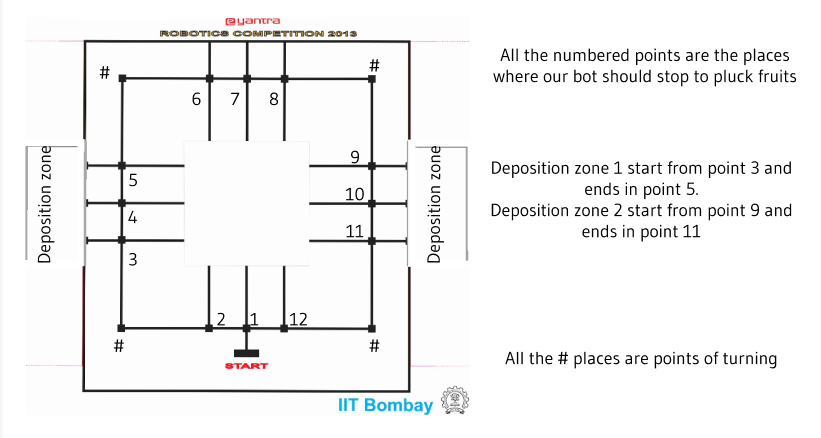
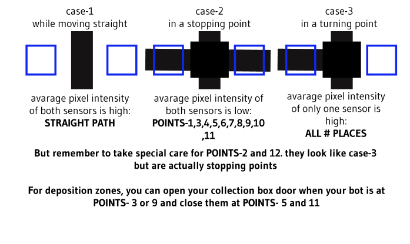
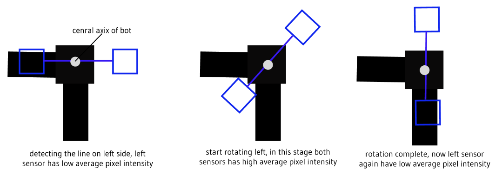

Note that this guide will not explain those parts which are already been covered in previous tasks like Arm control, line following and detection. this guide will only elaborate those extra parts which may need to be added to complete the task.
The stopping and turning points:
if you look in the arena then you will find out that you can recognize this places by looking at the line patterns
 After stopping at each point to pluck fruits, you just need to repeat task 4 to pluck and collect fruits. if the bot is near a deposition zone, you can empty your collection box
For turning:
For turning the bot you can use the same logic as we discussed in task 2
